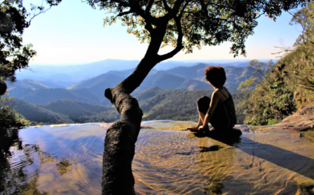
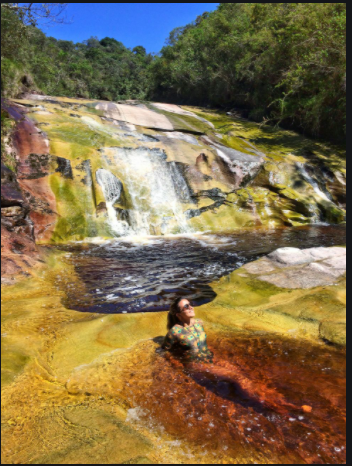
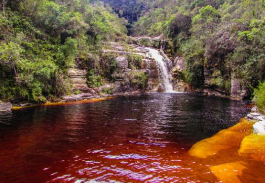
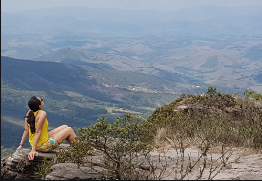
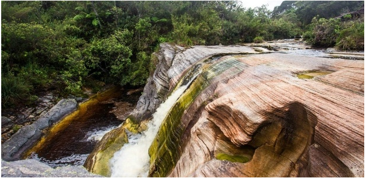
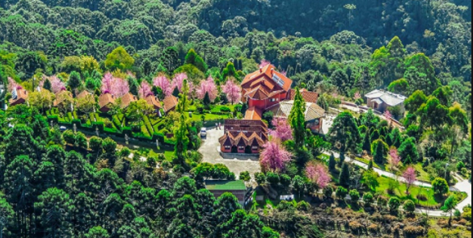
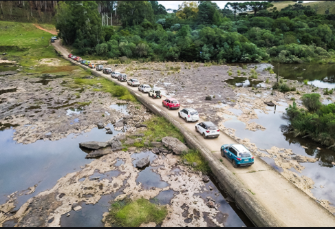
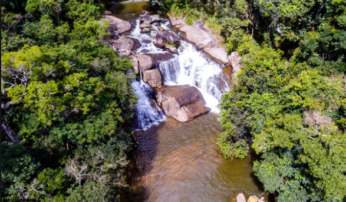
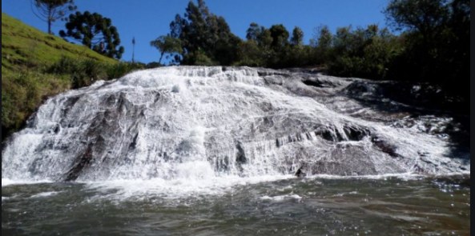
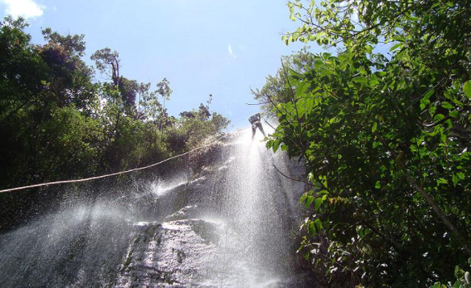

Capitólio -MG Capitólio é conhecida como o mar de Minas, por conta de suas muitas águas e lagos.
O Lago de Furnas é uma das principais atrações da região, que possui ainda muitos atrativos naturais.
A cidade fica localizada entre a Serra da Canastra e o Lago de Furnas....
OURO PRETO - MINAS GERAIS
Ouro Preto -MG Famosa pela sua importância histórica, a cidade de Ouro Preto também encanta pela beleza de suas construções e ruas de pedra.
Você só precisa estar preparado para as caminhadas nas longas ladeiras da cidade ....
IBITIPOCA - MINAS GERAIS





Ibitipoca -MG
Conceição de Ibitipoca é um dos lugares turísticos mais visitados e não é a toa.
O parque das águas possui diversas belezas naturais e estonteantes, como a famosa Janela do Céu ....
CAPITÓLIO - MINAS GERAIS





Gonçalves - MG Essa pequena cidade fica na região de Pouso Alegre e guarda muitas atrações, como cachoeiras e montanhas. Está localizada bem no meio da Serra da Mantiqueira,
perto de São Paulo, e você pode fazer trilhas em muitas das paisagens locais, como a Pedra do Forno..